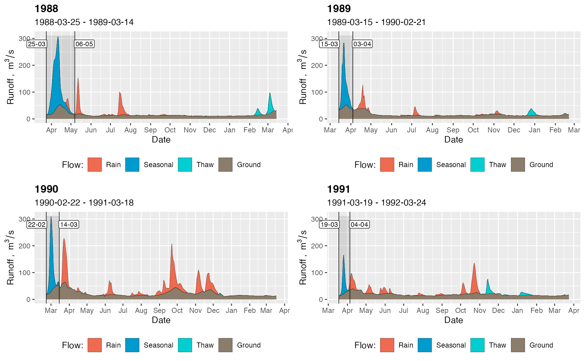

Introduction
The core of the grwat package is the advanced
hydrograph separation method by Rets et al.
(2022), which utilizes supplementary temperature and
precipitation data to classify quickflow events by their genesis. The
genetic types are rain, thaw and spring. The latter is a specific kind
of thaw flood (sometimes called a freshet) that appears in cold
climates at the beginning of the spring during the massive snow melting
in a watershed. It is not uncommon that a spring flood is significantly
larger than others during the year, and produces the major part of the
annual runoff volume.
Throughout grwat package documentation
a sample dataset spas containing the daily runoff data for
Spas-Zagorye
gauge on Protva river
in Central European plane is used. The dataset is supplemented by
meteorological variables (temperature and precipitation) obtained from
CIRES-DOE (1880-1949) and ERA5 (1950-2021) data averaged inside gauge’s
basin:
library(grwat)
data(spas) # example Spas-Zagorye data is included with grwat package
head(spas)
#> Date Q Temp Prec
#> 1 1956-01-01 5.18 -6.46 0.453
#> 2 1956-01-02 5.18 -11.41 0.825
#> 3 1956-01-03 5.44 -10.74 0.260
#> 4 1956-01-04 5.44 -8.05 0.397
#> 5 1956-01-05 5.44 -11.73 0.102
#> 6 1956-01-06 5.58 -20.13 0.032This 4-column representation of the date, runoff, temperature and precipitation is a standardized form of a data frame required for advanced separation
Separation basics
Advanced separation is a formal analytical procedure that is performed in several stages (Rets et al. 2022):
A. Identify the start dates of water resources years. The start date is the first day of the spring flood.
B. For each water-resources year:
- Separate quickflow and baseflow. Identify the end date of the spring flood as the first day after the start without quickflow.
- Calculate the long periods of significant precipitation and low temperatures.
- Identify second-order rain floods during the spring flood.
- Calculate the first day of winter season.
- Attribute all quickflow between the last day of spring flood and the first day of winter season as the rain flow.
- Attribute all quickflow between the first day of winter and the last day of water-resources year as the thaw flow.
This algorithm is executed by gr_separate() function,
which requires a 4-column data frame as specified earlier, and the list
of parameters. The number parameters is quite big (\(39\) for the current version of the
package), and the parameters depend on the regional climate and the size
of the river basin. Currently the recommended parameters are available
for some regions in the center of the East European Plane. You can use
them as the starting point for experimentation. The regions are:
northwestcentersouthnortheastvolgaokasoutheast

To ease the exchange of the parameters, they are organized as list,
as returned by gr_get_params(). You can pass either the
number of region, or its name in reg argument:
params = gr_get_params(reg = 'south')
head(params)
#> $winmon
#> [1] 11
#>
#> $grad1
#> [1] 2
#>
#> $grad2
#> [1] 5
#>
#> $gratio
#> [1] 350
#>
#> $spmon1
#> [1] 3
#>
#> $spmon2
#> [1] 5
params = gr_get_params(reg = 2)
head(params)
#> $winmon
#> [1] 11
#>
#> $grad1
#> [1] 1.7
#>
#> $grad2
#> [1] 5
#>
#> $gratio
#> [1] 400
#>
#> $spmon1
#> [1] 2
#>
#> $spmon2
#> [1] 5To ease the understanding of the parameters, grwat contains the
helper gr_help_params() function, which describes the
meaning of each:
gr_help_params()
#> # A tibble: 39 × 12
#> N name_old name example desc units formula comments pics desc_rus
#> <dbl> <chr> <chr> <chr> <chr> <chr> <chr> <chr> <lgl> <chr>
#> 1 1 mome winmon 11 the … month NA "not us… NA месяц, …
#> 2 2 grad grad1 1.5 rate… % NA "if cha… NA интенси…
#> 3 3 grad1 grad2 2 rate… % "\"\"" "\"\"" NA интенси…
#> 4 4 kdQgr1 gratio 150 maxi… % NA "can be… NA максима…
#> 5 5 polmon1 spmon1 2 the … month NA "can be… NA cамый р…
#> 6 6 polmon2 spmon2 5 the … month NA "can be… NA самый п…
#> 7 7 polkol1 sptriseda… 15 amou… days NA NA NA количес…
#> 8 8 polkol2 spriseday… 25 amou… days NA NA NA количес…
#> 9 9 polkol3 spdays 30 amou… days NA "can be… NA количес…
#> 10 10 polgrad1 sprise 10 mean… % NA NA NA значени…
#> # ℹ 29 more rows
#> # ℹ 2 more variables: role_1 <chr>, role_2 <chr>You can tweak the parameters just by changing their values in the list:
params$sprise = 12
params$gratio = 500It is quite hard to predict how effective will be parameters for the
particular basin. Therefore, the search for optimal values is
experimental work. After a preliminary parameters are set, you can
separate the hydrograph by gr_separate():
# separate
sep = gr_separate(spas, params)
#> grwat: data frame is correct
#> grwat: parameters list and types are OK
head(sep)
#> # A tibble: 6 × 11
#> Date Q Temp Prec Qbase Quick Qspri Qrain Qthaw Season Year
#> <date> <dbl> <dbl> <dbl> <dbl> <dbl> <dbl> <dbl> <dbl> <int> <int>
#> 1 1956-01-01 5.18 -6.46 0.453 NA NA NA NA NA NA NA
#> 2 1956-01-02 5.18 -11.4 0.825 NA NA NA NA NA NA NA
#> 3 1956-01-03 5.44 -10.7 0.26 NA NA NA NA NA NA NA
#> 4 1956-01-04 5.44 -8.05 0.397 NA NA NA NA NA NA NA
#> 5 1956-01-05 5.44 -11.7 0.102 NA NA NA NA NA NA NA
#> 6 1956-01-06 5.58 -20.1 0.032 NA NA NA NA NA NA NAResulting data frame is enriched with information about different
kinds of flow. To evaluate the results, you can use separation plots
provided by gr_plot_sep():
# One year
gr_plot_sep(sep, 1978) 
# Two years
gr_plot_sep(sep, c(1978, 2014))
# Four years in a matrix layout
gr_plot_sep(sep, 1988:1991, layout = matrix(1:4, nrow = 2, byrow = TRUE)) 
Tweaking of the parameters
Sometimes global parameters do not work, and you need to tweak the
values for selected years. For this you use a list of
parameter lists instead of the one list. In such case the
number of parameter lists must be equal to the number of
water-resources years in a runoff data. Instead of constructing such
list manually, you can use gr_separate() in
debug = TRUE mode. If this mode is activated, grwat will
return two additional attributes:
-
jitteredattribute shows the years for which grwat tweaked some parameters because it was unable to identify the beginning of water-resources year based ion global parameters; -
paramsattribute contains alistof parameterlists used for each year (including those that were jittered).
The attributes are extracted via a base R function
attributes():
# Debug mode gives access to additional information
sep_debug = gr_separate(spas,
params = gr_get_params(reg = 'center'),
debug = TRUE)
#> grwat: data frame is correct
#> grwat: parameters list and types are OK
#> Warning in gr_separate(spas, params = gr_get_params(reg = "center"), debug =
#> TRUE): grwat: 1974 years were not separated. Check the input data
#> for possible errors. Use gr_get_gaps() and gr_fill_gaps()
#> functions to detect and fill missing data.
#> Warning in gr_separate(spas, params = gr_get_params(reg = "center"), debug =
#> TRUE): grwat: 2002, 2014, 2019 years were processed with jittered
#> parameters
# a vector of years with jittered params
jit = attributes(sep_debug)$jittered
print(jit)
#> [1] 2002 2014 2019
# actual params used for each year
parlist = attributes(sep_debug)$params
partab = do.call(dplyr::bind_rows, parlist) # View as table
head(partab)
#> # A tibble: 6 × 39
#> winmon grad1 grad2 gratio spmon1 spmon2 sprisedays1 sprisedays2 spdays sprise
#> <dbl> <dbl> <dbl> <dbl> <dbl> <dbl> <dbl> <dbl> <dbl> <dbl>
#> 1 11 1.7 5 400 2 5 8 10 30 10
#> 2 11 1.7 5 400 2 5 8 10 30 10
#> 3 11 1.7 5 400 2 5 8 10 30 10
#> 4 11 1.7 5 400 2 5 8 10 30 10
#> 5 11 1.7 5 400 2 5 8 10 30 10
#> 6 11 1.7 5 400 2 5 8 10 30 10
#> # ℹ 29 more variables: spratio <dbl>, sprecdays <dbl>, spcomp <dbl>,
#> # precdays <dbl>, frostdays <dbl>, windays <dbl>, floodprec <dbl>,
#> # floodtemp <dbl>, frosttemp <dbl>, wintemp <dbl>, signratio1 <dbl>,
#> # signratio2 <dbl>, floodratio <dbl>, gaplen <dbl>, snowtemp <dbl>,
#> # gradabs <dbl>, mntmode <dbl>, mntgrad <dbl>, mntavgdays <dbl>,
#> # mntratiodays <dbl>, mntratio <dbl>, niter <dbl>, a <dbl>, k <dbl>, C <dbl>,
#> # aq <dbl>, padding <dbl>, passes <dbl>, filter <chr>After the list of parameters is extracted, any of those can be referenced by the character string of the water-resources year. For example, if you want to apply the parameters of one tweaked your globally, the following will work:
# extract and tweak parameters for selected year
p = parlist[['2014']]
p$grad1 = 1
p$grad2 = 2.5
# use tweaked parameters for all years
sep_debug = gr_separate(spas, params = p, debug = TRUE)
#> grwat: data frame is correct
#> grwat: parameters list and types are OK
#> Warning in gr_separate(spas, params = p, debug = TRUE): grwat:
#> 1974 years were not separated. Check the input data for possible errors.
#> Use gr_get_gaps() and gr_fill_gaps() functions to detect and fill
#> missing data.
#> Warning in gr_separate(spas, params = p, debug = TRUE): grwat: 2002,
#> 2019 years were processed with jittered parameters
# Visualize
gr_plot_sep(sep_debug, c(1978, 2014)) However, the most powerful strategy is to keep the nested list
structure and change the parameters individually for different years. If
you want to set some parameter for multiple years, then use
gr_set_param():
# actual params used for each year
parlist = attributes(sep_debug)$params
# tweak parameters for selected year
parlist[['2014']]$grad1 = 3
parlist[['2014']]$grad2 = 6
# set the sprecdays parameter for multiple years
parlist = gr_set_param(parlist, sprecdays,
years = c(1978, 1999:2015),
value = 15)
# set the spcomp parameter for all years
parlist = gr_set_param(parlist, spcomp, value = 2.5)
# use the list of parameters for separation
sep_debug = gr_separate(spas, params = parlist, debug = TRUE)
#> grwat: data frame is correct
#> grwat: parameters list and types are OK
#> Warning in gr_separate(spas, params = parlist, debug = TRUE): grwat:
#> 1974 years were not separated. Check the input data for possible errors.
#> Use gr_get_gaps() and gr_fill_gaps() functions to detect and fill
#> missing data.
# Visualize
gr_plot_sep(sep_debug, c(1978, 2014))